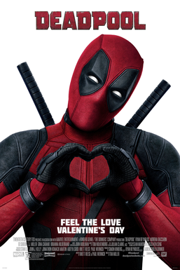
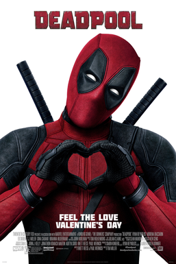

No Se Aceptan Devoluciones
No Se Aceptan Devoluciones
2h 2min
Comedia, Drama
Estrenada en 2013
Dirigida por Eugenio Derbez
Guion Guillermo Ríos
Reparto Eugenio Derbez, Karla Souza

Oppenheimer
Oppenheimer
3h 01min
Suspense, Histórico
Estrenada en 2023
Dirigida por Christopher Nolan
Guion Christopher Nolan
Reparto Cillian Murphy, Emily Blunt, Matt Damon

Black Mirror
Black Mirror
6 Temporada
Suspense, Drama
Estrenada en 2016
Creada por Charlie Brooker
Reparto Laura Cairns, Salma Hayek, Josh
Nacionalidad Gran Bretaña

Twilight
Twilight
2h 10min
Romántico, Fantasía
Estrenada en 2008
Dirigida por Catherine Hardwicke
Guion Melissa Rosenberg
Reparto Kristen Stewart, Robert Pattinson
El Increíble Castillo Vagabundo
El increíble Castillo Vagabundo
1h 59min
Fantasía, Animación
Estrenada en 2006
Dirigida por Hayao Miyazaki
Guion Hayao Miyazaki
Reparto Chieko Baishô, Takuya Kimura
El Trasportador
El Trasportador
1h 32min
Acción, Crimen
Estrenada en 2003
Dirigida por Corey Yuen, Louis Leterriery
Guion Robert Mark Kamen
Reparto Jason Statham, François Berléand
American Horror Story
American Horror Story
11 Temporadas
Terror, Antología
Estrenada en 2011
Creada por Brad Falchuk, Ryan Murphy
Reparto Emma Roberts
Nacionalidad EE.UU.

Intrusion
Intrusion
1h 32min
Suspense
Estrenada en 2021
Dirigida por Adam Salky
Guion Chris Sparling
Reparto Freida Pinto, Logan Marshall-Green, Robert John Burke